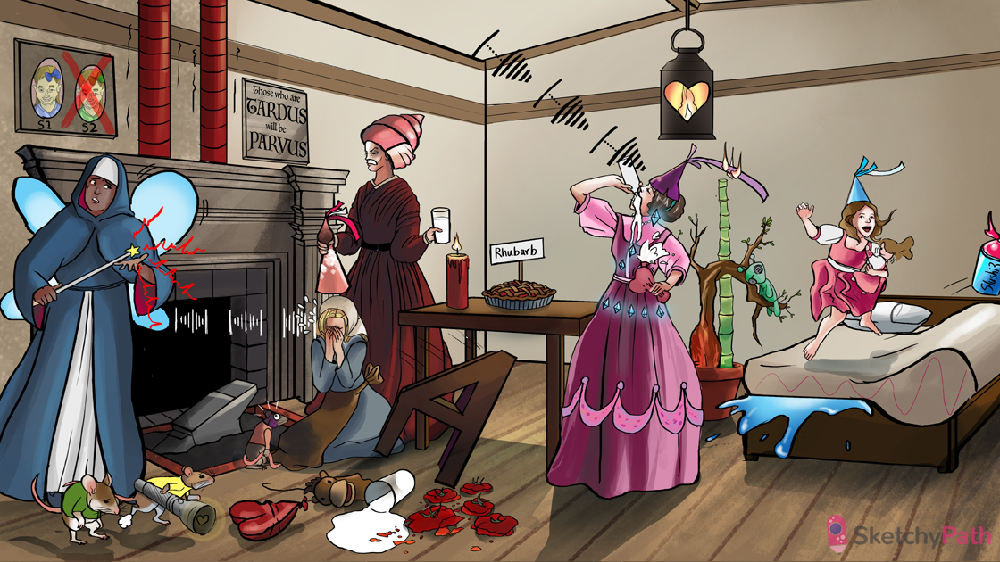

Squeezing aortic princess hat: aortic valve stenosis
Milk on lips: calcific degeneration of the aortic valve leaflets is the most common cause of aortic stenosis in the US
Black aortic hat tip: calcific degeneration of the aortic valve is associated with endothelial and fibroblast cell death
Clogged arterial candle: risk factors for calcific degeneration of the aortic valve include the risk factors for atherosclerosis (e.g. HTN, hyperlipidemia, diabetes mellitus, inflammation)
Crusty tip: calcific degeneration of the aortic valve shows up as fine, gritty, white clumps on histology
Bicuspid horse mouth next to milk: a bicuspid aortic valves is at risk of early dystrophic calcification
Concentric conch: chronically increased afterload in aortic stenosis leads to concentric hypertrophy of the left ventricle
Failing heart balloon: aortic stenosis can cause diastolic heart failure
Dilated left wing: aortic stenosis causes chronically elevated pressures in the left ventricle and atrium → LA dilation and hypertrophy
Irregularly irregular signals: aortic stenosis can cause atrial fibrillation (due to LA dilation)
Mouse huffing and puffing: aortic stenosis can present with heart failure symptoms (e.g. dyspnea on exertion)
Dim heart light: aortic stenosis can cause a “fixed cardiac output” (unable to increase with stress)
Angina anvil: aortic stenosis can cause angina (due to a fixed cardiac output and increased oxygen demand from cardiac hypertrophy)
Sinking quicksand: aortic stenosis can cause syncope (due to a fixed cardiac output that cannot increase during standing or exercise → decreased brain perfusion)
Murmur from systolic spray: aortic stenosis can present with a harsh, crescendo-decrescendo holosystolic murmur
Pair of vibrating pipes: the murmur of aortic stenosis is best heard at the right sternal border and radiates to the carotid arteries
Stiff S4 chair: concentric hypertrophy in aortic stenosis leads to left ventricular wall stiffness → S4 heart sound
“Parvus and Tardus”: severe aortic stenosis presents with a weak, slow-rising pulse (“pulsus parvus et tardus”)
Late bloomer: more severe aortic stenosis presents with a later peak in the crescendo
Crossed out second sister: severe aortic stenosis presents with a diminished S2 heart sound
Squatting Cinderella: maneuvers that increase preload (e.g. straight leg raise or squatting) increase the murmur of aortic stenosis (due to increased stroke volume across the valve)
Straining to grip tail: maneuvers that decrease preload (e.g. standing, valsalva) or increase afterload (e.g. handgrip) reduce the murmur of aortic stenosis (due to reduced stroke volume across the valve)
Lysed tomatoes: the jet stream through a stenotic aortic valve can cause hemolytic anemia (schistocytes on blood smear)
Regurgitating aortic princess hat: aortic regurgitation
Rhubarb pie in the center: the valvulitis in acute rheumatic fever can cause aortic regurgitation (most common cause in developing world) → chronic rheumatic heart disease can cause aortic stenosis
Regurgitating milk: dystrophic calcification can also cause aortic regurgitation (most common cause in developed world)
Bulging aortic hat base: aortic root dilation can cause aortic regurg
Bark on aortic tree: aortitis in tertiary syphilis (“tree-barking”) can cause aortic regurgitation (due to aortic root dilation)
Inflamed tree base: large vessel vasculitides (e.g. Takayasu arteritis, giant cell arteritis) can cause aortic regurgitation (due to aortic root dilation)
Bamboo spine: ankylosing spondylitis can cause aortic regurgitation (due to sclerosis of aortic root)
Martian: collagen vascular diseases (e.g. Marfan, Ehlers-Danlos) can cause aortic regurgitation (due to aortic root dilation)
Flame in heart: infective endocarditis can cause aortic regurgitation (due to valve damage)
Eccentric myocardial ribbon: aortic regurgitation can cause a chronically increased end diastolic volume and pressure → left ventricular eccentric hypertrophy
Ejecting heart: eccentric hypertrophy of the left ventricle allows for an increased stroke volume to maintain cardiac output
Bulging up and down: the increased stroke volume in aortic regurgitation causes an increased SBP and decreased DBP → widened pulse pressure (e.g. 160/60)
Hammering water: aortic regurgitation causes the rapid filling and and collapse of blood vessels (Corrigan or “water hammer” pulse)
Bobbing doll head: aortic regurgitation can cause a characteristic head bob with each pulsation (de Musset sign)
Jumping on nail bed: increased pulse pressures in aortic regurgitation can cause pulsations in the lips or nailbeds (Quincke pulse)
Murmur and diamonds: the murmur of aortic regurgitation is described as a blowing, decrescendo diastolic murmur (best appreciated at the left sternal border in the third or fourth intercostal space)
Sloshing Slushi3: the dilation of the left ventricle with aortic regurgitation can cause an S3 heart sound